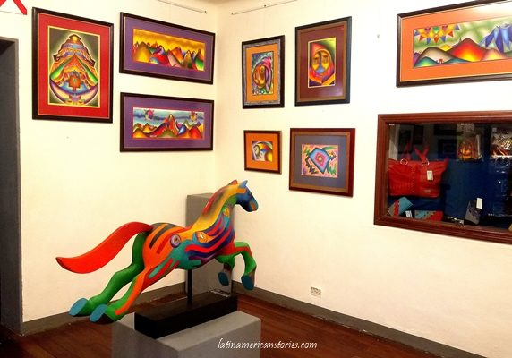
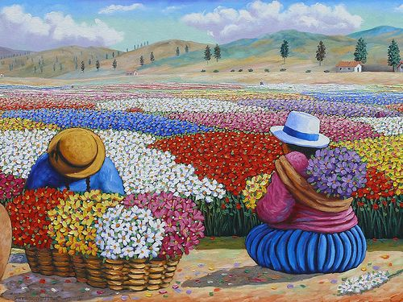

El mejor pintor de Bolivia
Una plataforma de informacion en cuanto a la historia y las pinturas de Roberto Mamani...!!!
Comenzar gratis!!!..El arte no está hecho para reglas...!!!
ARTE LATINOAMERICANO
Las obras de Mamani Mamani representan paisajes montañosos, animales andinos como el cóndor, llamas, alpacas y otros como gallos, caballos toros y sapos por el significado simbólico que estos tienen.
Conoce mas
ARTE PERUANO
La pintura llega al Perú en el siglo XVI, con los conquistadores españoles. Por entonces, el oficio no se entendía como hoy. Más que pintores había talleres dirigidos por un maestro que tenía algunos discípulos u
Conoce mas
ARTE NATIVO

El arte indígena también es reconocido como arte nativo, ya que engloba todas aquellas obras de arte, esculturas y manufacturas de los que se podrían llamar aborígenes en determinadas naciones, mundialmente se le llama el arte de los pueblos.
Conoce mas
!!!..Con mi estilo Mágico Andino, siempre traté la altivez de nuestra cosmovisión boliviana...!!!
HISTORIA
Roberto Mamani, conocido como Mamani Mamani (1962), boliviano. Nacido quechua y portando sangre aymará (pueblo que habita en América desde miles de años atrás y que, obviamente, antecede en mucho a la conquista española)Para Mamani Mamani tuvo gran importancia su abuela, quien en la lengua quechua le transmitía todos sus conocimientos acerca de la Pacha Mama, la lectura de las hojas de coca y su filosofía de vida en relación a la naturaleza andina.
¿QUE ERAN TUS PRIMEROS DIBUJOS?
Mis primeros dibujos fueron paisajes. Yo tuve la suerte de que mis padres en ningún momento se opusieran a lo que me gustaba. Estudie algo de derecho y agronomía, pero solo cuatro años, y ya para entonces había ganado algunos premios.Busco realizó obras que trasciendan; pinturas como icono referenciales, como esculturas monumentales y murales en lugares públicos, todo esto para testimoniar mi agradecimiento a la vida.
¿EN QUE TE INSPIRAS?
Yo empecé con las montañas y hasta ahora voy trabajando por series, cada uno tiene un contenido y una visión de la cosmovisión andina, de la simbología, lo mío es bien cultural, mi inspiración y fuente inagotable es parte de nuestra cultura.Mucho y demasiado, la base de mi arte es mi cultura; sus rituales, bailes, comida, visión y los sentimientos de mi gente. Siempre respetando a la madre tierra Pacha mamá.

¿QUE LES QUIERES DEJAR A LAS FUTURAS GENERACIONES?
Un camino para los que vienen por detrás. Creo que ahí está mi ‘ayni’ (reciprocidad), no solo es recibir, sino también dar. El artistas es soñador, me gustaría concretar a parte de estos murales importantes, algo que he querido hacer siempre, unas pachamamas gigantes.Es un artista autodidacta que ha desarrollado su plástica a partir de la visión y sentimientos originarios de su pueblo; una tierra vibrante, vital, llena de colores, carácter, texturas y emociones como lo es Bolivia.
!!! Mi arquitectura no es arquitectura exotica solo representa la cultura de mis ancestros...!!!!
TRAYECTORIA ARTISTICA
Ha expuesto sus obras en galerías nacionales y del exterior de Bolivia. Sus obras se encuentran en colecciones privadas en varias partes del mundo; Argentina, Brasil, Ecuador, Colombia, Venezuela, Cuba, México, Canadá, Estados Unidos, Japón, Alemania, Dinamarca, España, Holanda, Australia, Italia, Francia e Inglaterra.
La Razón Digital / Guadalupe Tapia / La Paz
El artista boliviano Roberto Mamani Mamani pinta 14 megamurales en siete edificios de 12 pisos cada uno, que se construyen en Villa Mercedario, en la zona de Villa Adela de la ciudad de El Alto. Con este proyecto busca ingresar en el libro de récord Guiness.
PREMIOS Y RECONOCIMIENTOS
Su propuesta ha merecido numerosos premios y distinciones entre ellos
- 1er Premio en fotografía, Día Mundial de la Población,1990, Naciones Unidas
- 1er Premio en Dibujo, Salón Pedro Domingo Murillo, 1991, La Paz
- Finalista en la Bienal de Arte Sacro 1998, Buenos Aires, Argentina
- Invitado Especial al Pabellón de Bolivia, Expo 2000 Hannover, Alemania.
!!!...Siempre parece imposible hasta que se hace...!!!